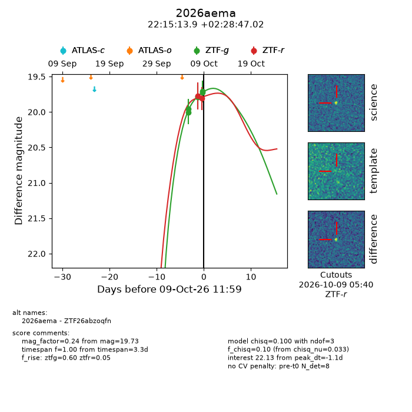
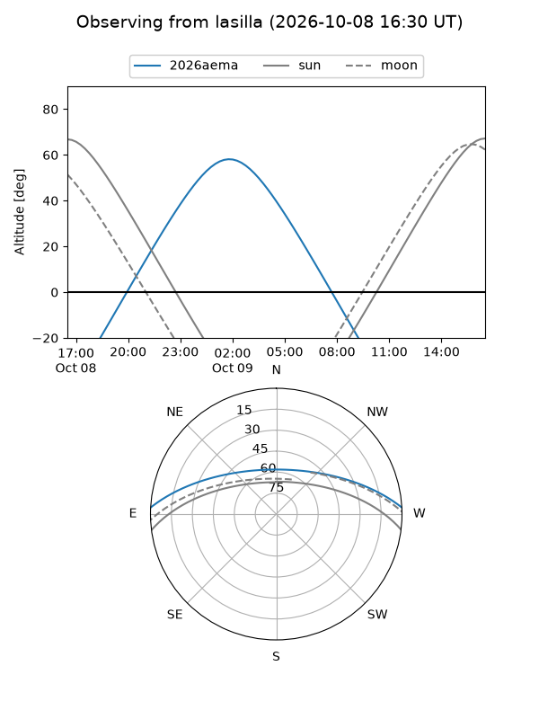
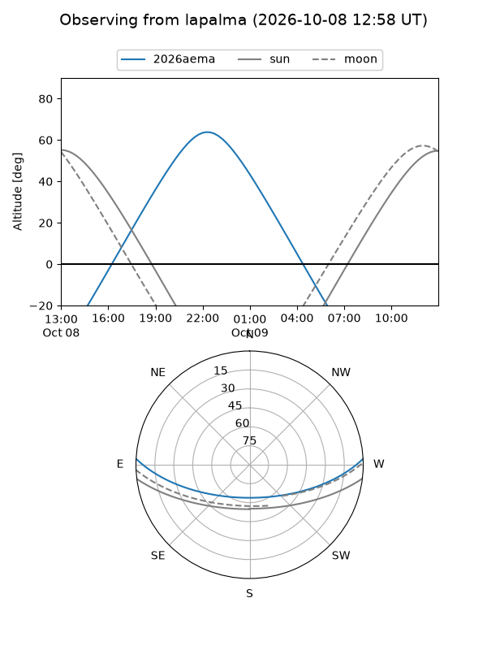
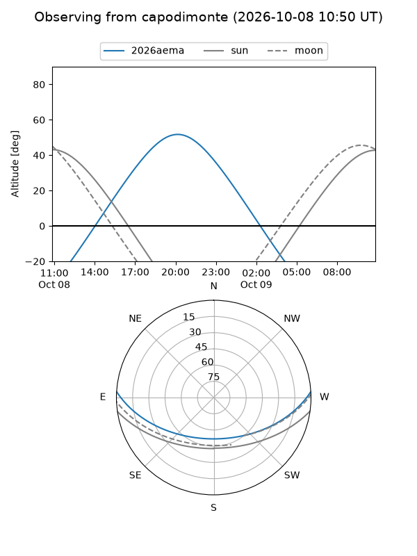
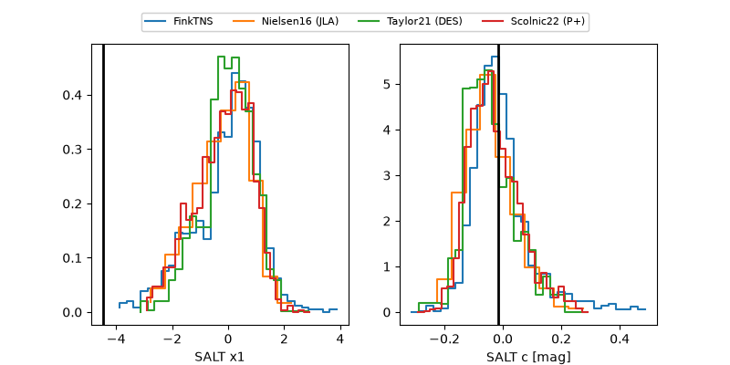

2026aema
Target 2026aema at 2026-10-09 12:01
Aliases and brokers:
FINK-ZTF: ztf.fink-portal.org/ZTF26abzoqfn
Lasair-ZTF: lasair-ztf.lsst.ac.uk/objects/ZTF26abzoqfn
ALeRCE-ZTF: alerce.online/object/ZTF26abzoqfn
YSE-PZ: ziggy.ucolick.org/yse/transient_detail/2026aema
TNS name: wis-tns.org/object/2026aema
Direct TNS query: direct search
alt names
ZTF26abzoqfn (ztf,fink_ztf)
2026aema (tns,yse)
Coordinates:
equatorial (ra, dec) = 333.8078,+2.47973
equatorial (HMS+DMS) = 22:15:13.87,+02:28:47.02
galactic (l, b) = (64.8644,-42.12647)
Flags:
peak dt: -1.1
Photometry:
last ztfg=19.73, ztfr=19.81
6 ztfg, 2 ztfr detections
Lightcurve

Visibility



Additional plots
